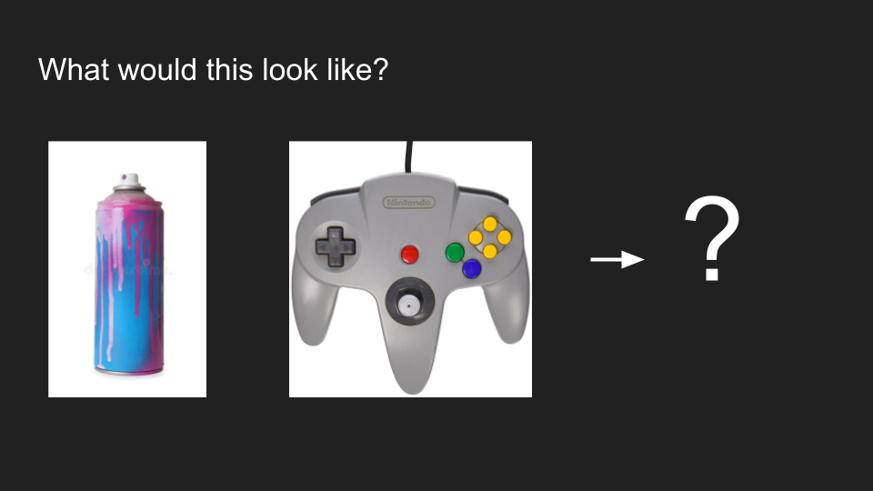
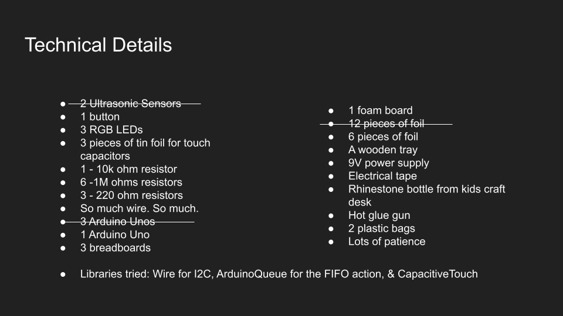
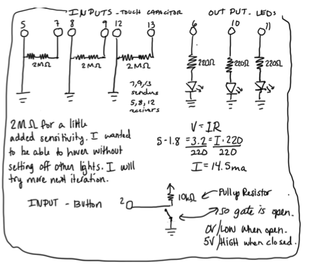

Concept
Digitized spray paint?
I wanted to make a digitized spray can. Originally the idea was to make a controller that would paint onto a screen using ultrasonic sensors. It was a brave start, but using ultrasound sensors on the can alone would have been complicated in a different way than I had time for. Instead, I chose to spray digitally only a board of lights.

The experience
Have you ever painted on a buddha board? They are very satisfying. You paint on the water...and the dark marks slowly fade away. All things fade, René. All things. My hope was to capture this "paint on and fade" experience.Technical Implementation
Supplies
Feel free to swap out hot glue for sodder or some other fixative, a wooden tray for anything lacking conductivity to house the wires, the plastic bags for cloth, or the spray can. You'll want a power source, too. 9V Battery or 9V cord will work.

But you must not change the rhinstones. Rhinestones are important. They provide shiny and haptic delight.
Schematic
This image above is the schematic. It looks so simple for a not-so-simple project!
Circuit Images


One the larger breadboard, the 3 LEDs and 3 touch capacitors are positioned down the board to facilitate easy wiring with the arduino. The smaller boards are used to make the button of the "spray can."
For the smaller two bread boards, one is on the underside of the lid and the other one is on the top.
Firmware
//library for the touch capacitor
#include < CapacitiveSensor.h>
#include < ArduinoQueue.h>
//Set the senders and receivers
CapacitiveSensor cs_13_12 = CapacitiveSensor(13,12);
CapacitiveSensor cs_9_8 = CapacitiveSensor(9,8);
CapacitiveSensor cs_7_5 = CapacitiveSensor(7,5);
//instantiate a queue
ArduinoQueue intQueue(20);
// These constants won't change:
const int sensorPin1 = 12; // pin that the sensor is attached to
const int sensorPin2 = 8; // pin that the sensor is attached to
const int sensorPin3 = 5; // pin that the sensor is attached to
// int sensors[3]= {12, 8, 5};
// const int ledPin = 13; // pin that the LED is attached to
// variables:
int sensorValue1 = 0; // the sensor value
int sensorMin1 = 0; // minimum sensor value
int sensorMax1 = 1023; // maximum sensor value
int sensorValue2 = 0; // the sensor value
int sensorMin2 = 0; // minimum sensor value
int sensorMax2 = 1023; // maximum sensor value
int sensorValue3 = 0; // the sensor value
int sensorMin3 = 0; // minimum sensor value
int sensorMax3 = 1023; // maximum sensor value
//start a timer to track how long the spray is held down for
long sprayStart=0;
void setup() {
//set the pins
pinMode(11, OUTPUT);
pinMode(10, OUTPUT);
pinMode(6, OUTPUT);
pinMode(2, INPUT);
Serial.begin(9600);
//turn off the automatic calibration from the library
cs_13_12.set_CS_AutocaL_Millis(0xFFFFFFFF);
cs_9_8.set_CS_AutocaL_Millis(0xFFFFFFFF);
cs_7_5.set_CS_AutocaL_Millis(0xFFFFFFFF);
calibrate();
// signal the end of the calibration period
// digitalWrite(13, LOW);
Serial.println("DONE");
}
void calibrate(){
while (millis() < 5000) {
sensorValue1 = cs_13_12.capacitiveSensor(30);
// record the maximum sensor value
if (sensorValue1 > sensorMax1) {
sensorMax1 = sensorValue1;
}
// record the minimum sensor value
if (sensorValue1 < sensorMin1) {
sensorMin1 = sensorValue1;
}
}
while (millis() < 5000) {
sensorValue2 = cs_9_8.capacitiveSensor(30);
// record the maximum sensor value
if (sensorValue2 > sensorMax2) {
sensorMax2 = sensorValue2;
}
// record the minimum sensor value
if (sensorValue2 < sensorMin2) {
sensorMin2 = sensorValue2;
}
}
while (millis() < 5000) {
sensorValue3 = cs_7_5.capacitiveSensor(30);
// record the maximum sensor value
if (sensorValue3 > sensorMax3) {
sensorMax3 = sensorValue3;
}
// record the minimum sensor value
if (sensorValue3 < sensorMin3) {
sensorMin3 = sensorValue3;
}
}
digitalWrite(6, HIGH);
delay(2000);
}
void loop() {
Serial.println(digitalRead(2));
//if the button is pressed
if(digitalRead(2)==0){
//
if(sprayStart==0){
sprayStart = millis();
}
//take the millisecond reading on start
long start = millis();
//caluclate the total time it takes to recieve the signal
//and constrain then map
int total1 = cs_13_12.capacitiveSensor(30);
total1 = constrain(total1, sensorMin1, sensorMax1);
total1 = map(total1, sensorMin1, sensorMax1, 0, 1000);
int total2 = cs_9_8.capacitiveSensor(30);
total2 = constrain(total2, sensorMin2, sensorMax2);
total2 = map(total2, sensorMin2, sensorMax2, 0, 1000);
int total3 = cs_7_5.capacitiveSensor(30);
total3 = constrain(total3, sensorMin3, sensorMax3);
total3 = map(total3, sensorMin3, sensorMax3, 0, 1000);
//UGH sometimes 140-- sometimes 400
if(total1 >30){
//put it in the queue for removal later
intQueue.enqueue(11);
//turn the light on high
analogWrite(11, 255);
}
//repeat with other pins
//I know; will address later
if(total2 > 30){
intQueue.enqueue(10);
analogWrite(10, 255);
}
if(total3 > 30){
intQueue.enqueue(6);
analogWrite(6, 255);
}
//an attempt to give space? Proably not needed; test it out later
delay(500);
}
//button is pressed
if(digitalRead(2)==1){
//if there's something in the queue and at least
//1000 milliseconds has passed
if (intQueue.itemCount()>0 && (millis()-sprayStart) > 1000){
// reset the sprayStart
sprayStart = 0;
//this is excessive, but no time
//these store the state of the pins
//if the pins have faded, the variable changes to true
//in order to prevent the light from going over again
bool eleven = false;
bool ten = false;
bool six = false;
int pin;
//until the queue is empty
while(!intQueue.isEmpty()){
//it was holding onto the previous pin value for some reason? so.
pin = 0;
//pin is supposed to equal the next head
//(which also removes from queue)
pin = intQueue.dequeue();
//if it's the eleven pin and it's not gone off this round
if (pin == 11 && !eleven){
//store the state so we know eleven has gone off
//to avoid same pin consecutive flashing
eleven = true;
//fade the pin
for(int i = 255; i >=0; i--){
analogWrite(pin, i);
//delay to allow the fade to show
delay(5);
}
}
//if it's the ten pin and it's not gone off this round
if (pin == 10 && !ten) {
//change the stored state
ten = true;
//fade the pin
for(int i = 255; i >=0; i--){
analogWrite(pin, i);
//delay to allow fade to show
delay(5);
}
}
//if it's the six pin and it's not gone off this round
if (pin == 6 && !six){
//indicate it's gone off
six = true;
// fade the pin
for(int i = 255; i >=0; i--){
analogWrite(pin, i);
//delay to allow the fade to show
delay(5);
}
}
}
}
}
}
Process:
Whenever I start a new adventure, I like to sample my ideas on a small level. What's the riskiest assumption here? I think the riskiest assumption is that an LED will light if it's in the center of a tin-foil touch capacitor on a foam board covered in cloth.

And when that risk is tested...I like to scale. I cut 6 holes into a foam board for the RGB LEDs. I naively contemplated more. Then I attached the foil and hooked up wires to two sections. Complete with fading!


From here I foiled up the whole foam board. I hooked up all the wires with two arduinos, too. The foam board sat nicely in a wooden tray we had laying around. This tray made an EXCELLENT carrying device. It also has holes on both sides to carry... and put wires through...like 9V power source cords.


Retrospective:
Calibration is essential for this project. I was able to make the sensors work as intented without calibration, but when the sensor moves or someone sneezes, I'd have to manually adjust the code. "It worked yesterday!?" was a frequent thought throughout this project. Above I calibrate the three lights upon starting the program and run it again every 700 cycles.
Another very helpful tool was the ArduinoQueue library to facilitate the FIFO structure needed to fade the LEDs in their lit order.
A significant problem I encountered early on involved the LEDs adding twice or three or 10 times to the queue causing the light to hop to 255 and fade many times in a row. To fix this, I set a state on each pin. Once the state has changed upon the first fade per cycle, the light doesn't repeat coming on (although its probably still in the queue). This is also why the queue is initiated at 20. If it were only 3, lights would triple-add themselves to the queue, run and fade...but then any extra ligihts would stay lit.
Overall, I loved working on this project. I started small and thought I could scale the proect with no issues. I didn't realize the sensors would need calibration so frequently. Had I known the sensor would change so drastically over short intervals (even with calibration!), I probably would have stopped scaling at 3 and started testing the casing and spray can. Instead, I scalledto 6 LEDs and spent 5 days trying to make the 6 work reliably. In that time I also got to work with the Wire library and the 12C protocol. I actually connected three arduinos, but the code had latency issues that wouldn't work for the application here. NEVERTHELESS, I learned so much and want to keep going.